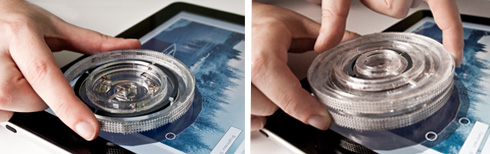
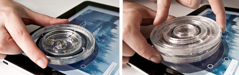

Publication
Chan, L., Mueller, S., Roudaut, A. and Baudisch, P.
CapStones and ZebraWidgets: Sensing Stacks of Building Blocks, Dials and Sliders on Capacitive Touch Screens
In Proceedings of
CHI ’12
, pp. 2189-2192.
DOI
Paper
Video
Slides
Talk
Press
Video
Talk
Slides


CapStones and ZebraWidgets:
Sensing Stacks of Building Blocks, Dials and Sliders on Capacitive Touch Screens
 Recent research proposes augmenting capacitive touch pads with tangible objects, enabling a new generation of mobile applications enhanced with tangible objects, such as game pieces and tangible controllers. In this paper, we extend the concept to capacitive tangibles consisting of multiple parts, such as stackable gaming pieces and tangible widgets with moving parts. We achieve this using a system of wires and connectors inside each block that causes the capacitance of the bottom-most block to reflect the entire assembly. We demonstrate three types of tangibles, called CapStones, Zebra Dials and Zebra Sliders that work with current consumer hardware and investigate what designs may become possible as touchscreen hardware evolves.

Recent research proposes augmenting capacitive touch pads with tangible objects, enabling a new generation of mobile applications enhanced with tangible objects, such as game pieces and tangible controllers. In this paper, we extend the concept to capacitive tangibles consisting of multiple parts, such as stackable gaming pieces and tangible widgets with moving parts. We achieve this using a system of wires and connectors inside each block that causes the capacitance of the bottom-most block to reflect the entire assembly. We demonstrate three types of tangibles, called CapStones, Zebra Dials and Zebra Sliders that work with current consumer hardware and investigate what designs may become possible as touchscreen hardware evolves.
